Norsk Tipping
Problems
- 1. Customers find the website so hard to use that some give up when trying to buy our products
- 2. Project based work with water fall involvement of design agencies.
- 3. A culture
- 3. No designers included in the teams or no ux process like user testing
Goals
- Create a frictionless experience customer journey in digital channels
- Give customers rich, relevant and unified experience aligned with the vision of the company to give the dream a chance.
A bit of background
What we did
- Samlokaliserte alle webutviklere i en agile setup med tre team
- Introduserte designere i teamene og samt skapte en user centered process
- Created a coded always up to date styleguide with reusable elements and patterns
- Made a new connections with customer center
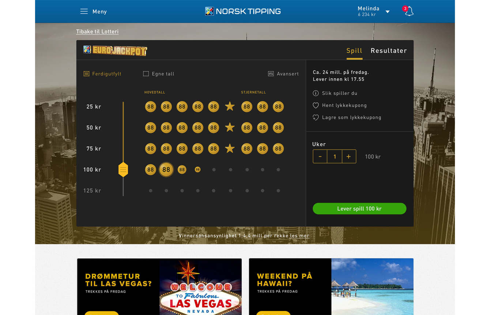
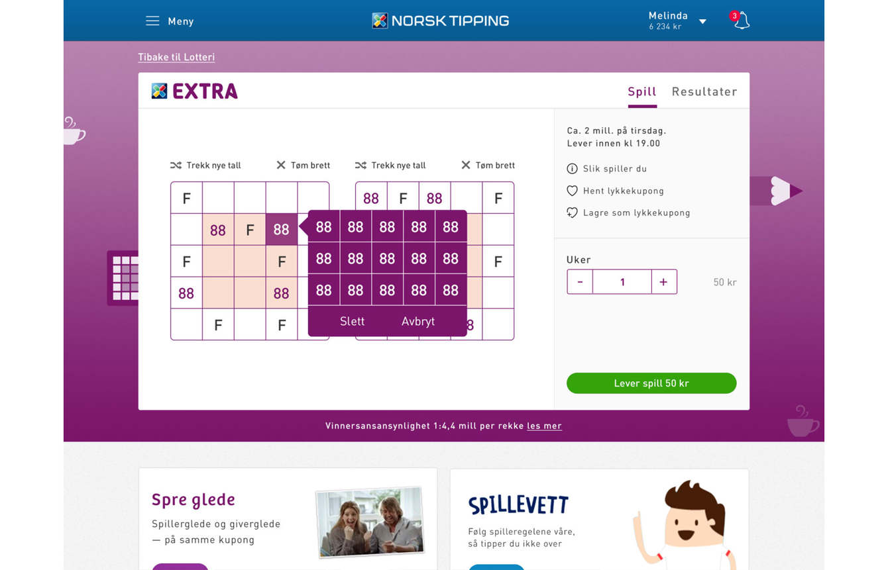
 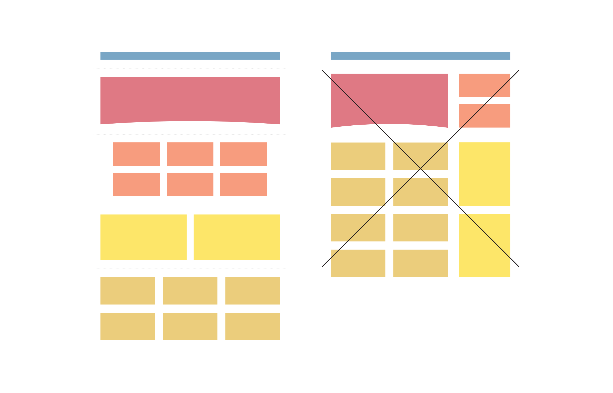
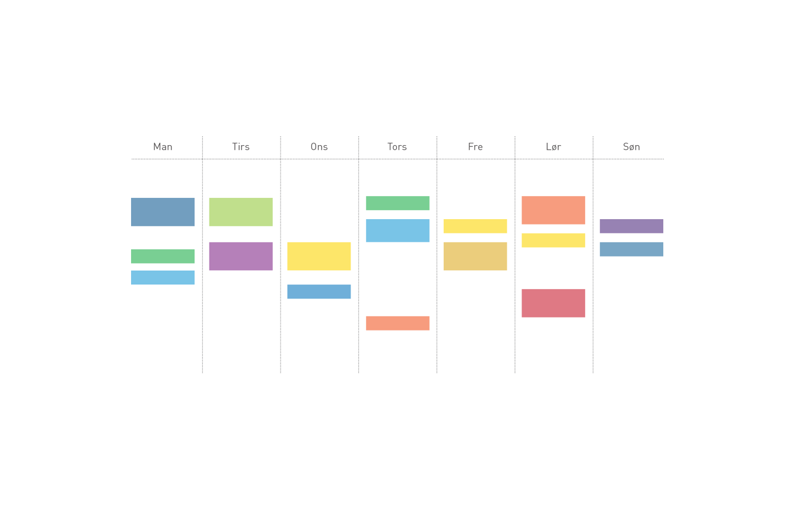
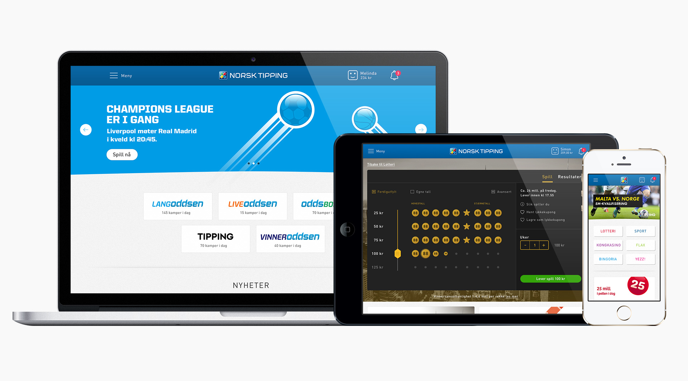
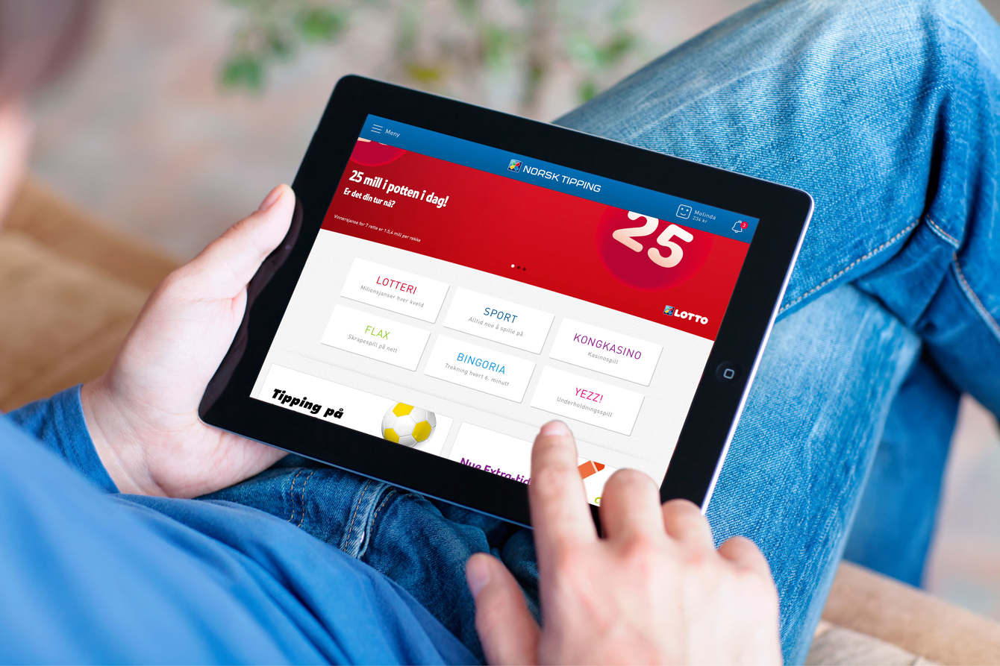
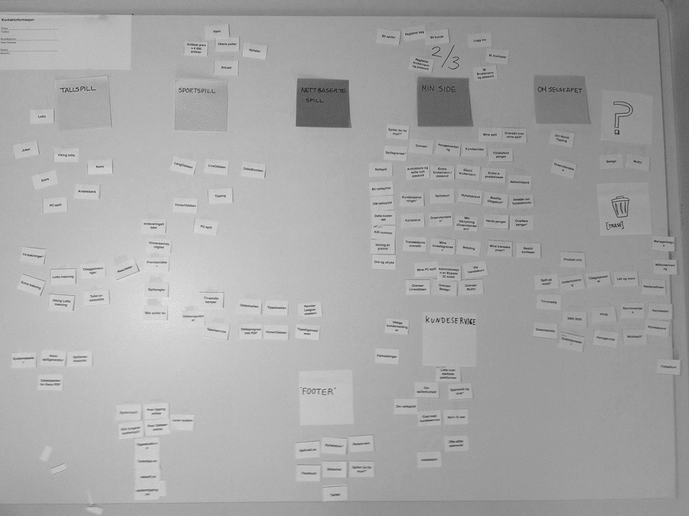
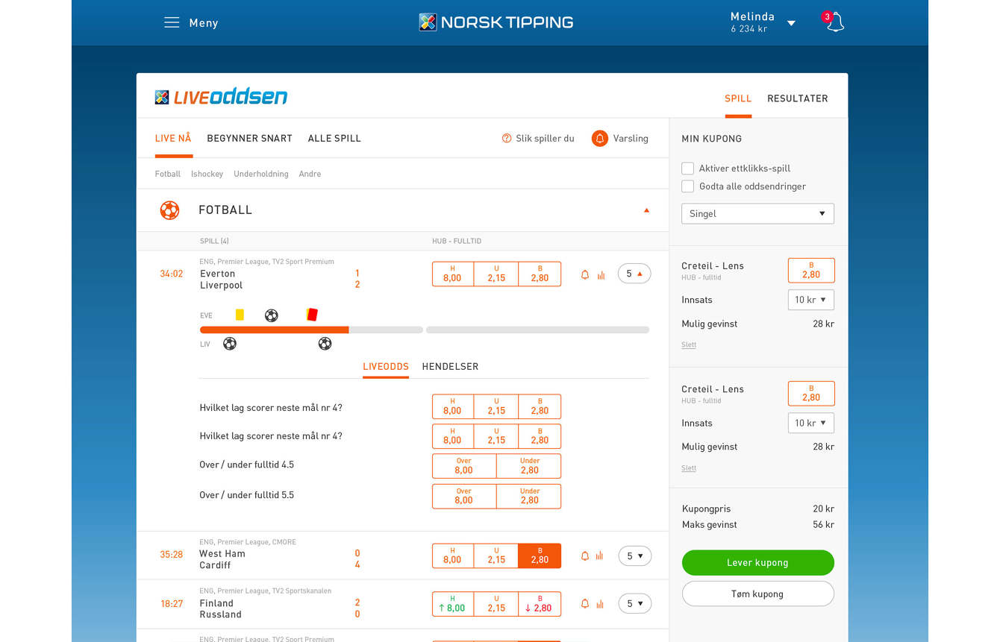
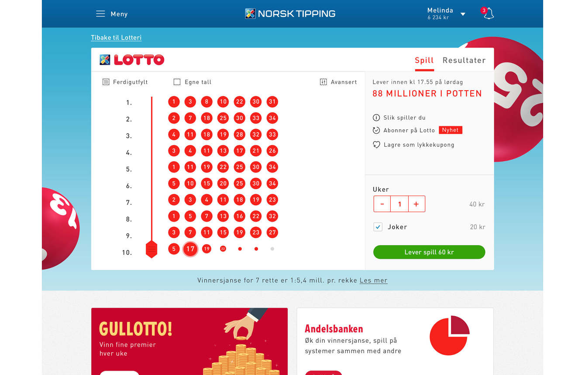
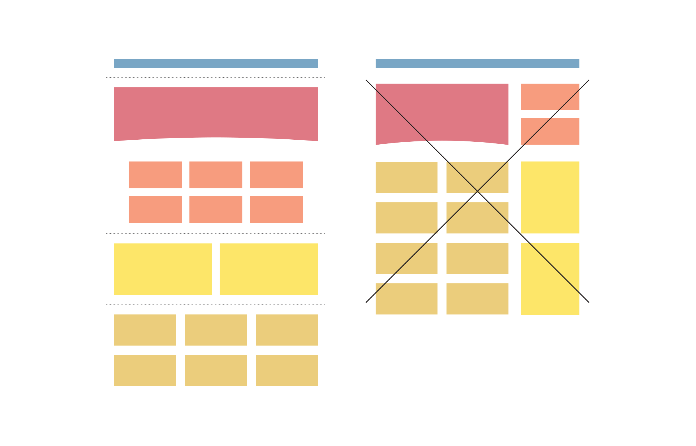
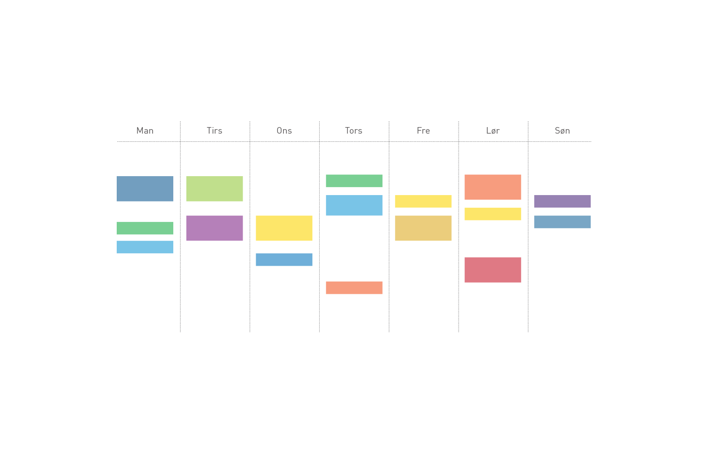
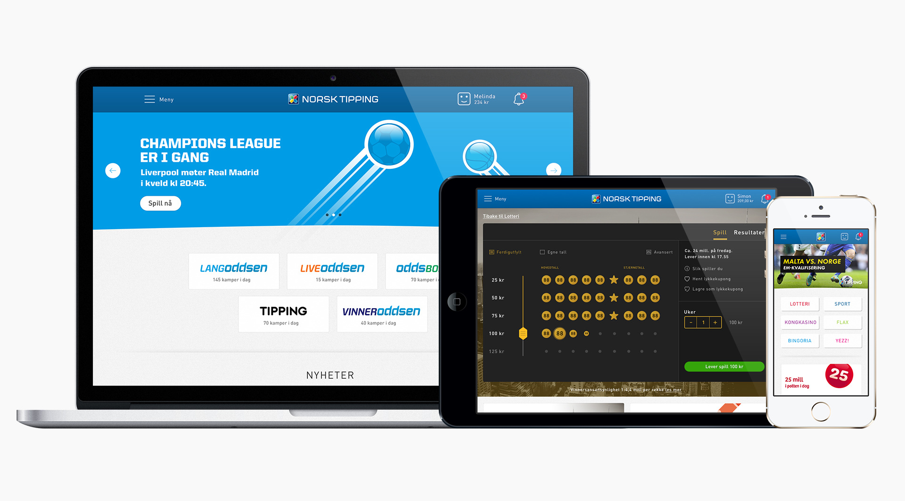
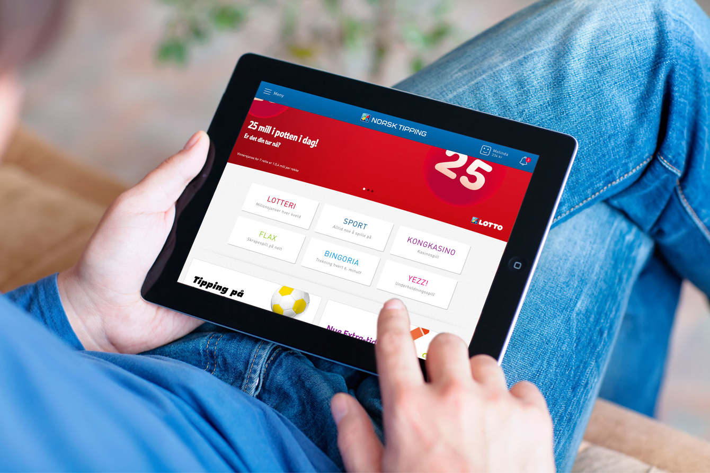
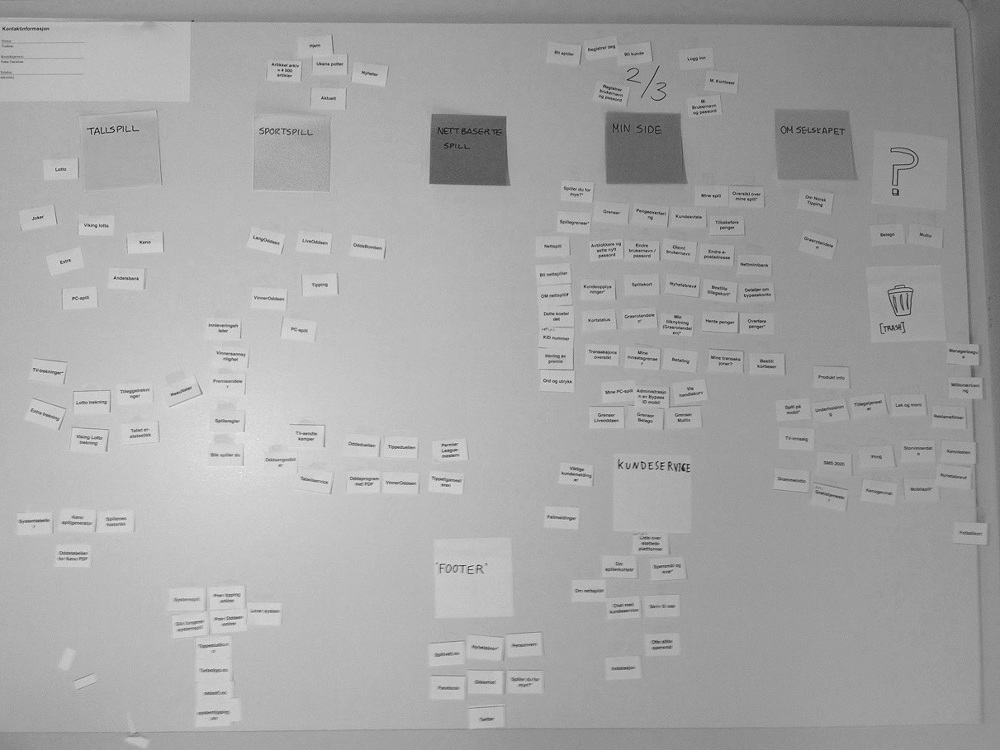
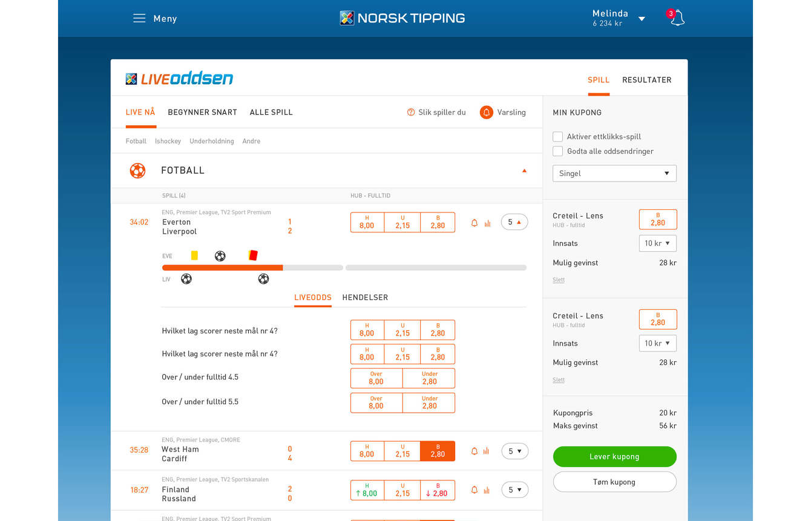
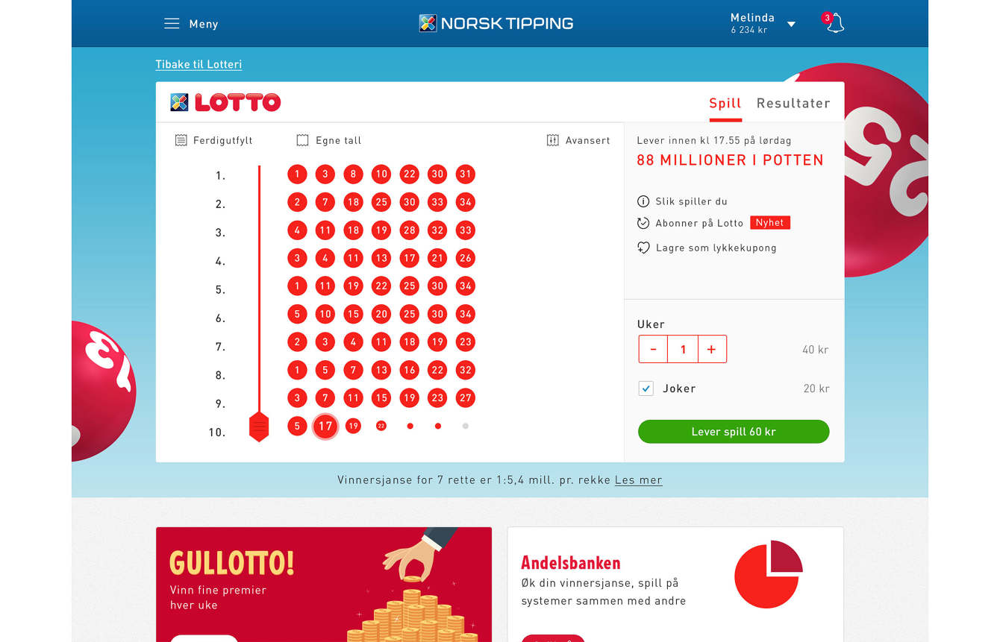